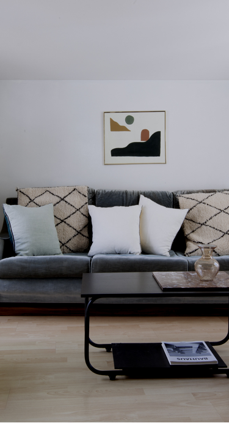

<nav class="navbar sticky-top navbar-expand-lg navbar-light bg-light ">
    
    <div class="desktop-nav" [ngClass]="isDesktopDevise ? '' : 'hide'">
        <ul class="desktop-nav-list">
            <li *ngFor="let item of navigation"  (mouseover)="showCollapsedMenu(item)"><a href="{{item.url}}">{{item.title}}</a> </li>
        </ul>
        <div *ngIf="openedItem">
            <div *ngIf="openedItem.level2" id="collapsed-menu" (mouseleave)="hideCollapsedMenu()">
                <div  class="collapsed-menu-content" >
                    <div class="content-row" *ngFor="let lv2Item of openedItem.level2">
                        <a  *ngIf="lv2Item.url" class="title" href="{{lv2Item.url}}">{{lv2Item.title}}</a>
                        <span *ngIf="!lv2Item.url" class="title">{{lv2Item.title}}</span>
                        <div  class="links" *ngFor="let link of lv2Item.links">
                            <a href="{{link.url}}">{{link.title}}</a>
                        </div>
                    </div>
                    <div class="collapsed-menu-right-image">
                        
                        <p>Tendances 2019</p>
                    </div>
                </div>
            </div>
        </div>

    </div>

    <div class="right-btn">
        <button
                (click)="showGeolocPopup()">
            
        </button>

        <button class="user-btn">
            <a href="https://auth.littleworker.fr/"></a>
        </button>
        <button [ngClass]="isDesktopDevise ? 'hide' : ''"  type="button" (click)="openAndCloseNav()" data-toggle="collapse" data-target="#navbarNavAltMarkup" aria-controls="navbarNavAltMarkup" aria-expanded="false" aria-label="Toggle navigation" >
            
            

        </button>

        <div class="geoloc-popup-body" id="geolocPopup">
            <h1 class="geoloc-popup">Geolocalisation</h1>
        </div>
        <button class="project-estimation-btn" [ngClass]="isDesktopDevise ? '' : 'hide'" >
        Estimer mon projet
        </button>
    </div>
    <div id="side-navbar" class="sidenav">
    <span class="navbar-header-title">Menu</span>

        <div *ngFor="let navElement of navigation" class="nav-element">
        <a href="{{navElement.url}}">{{navElement.title}}</a>
            <!--<fa *ngIf="navElement.level2.length" (click)="openAndCloseNavlevel2()" name="angle-right" size="2x"></fa>-->
           </div>
       </div>
       <!--<div class="collapse navbar-collapse" id="navbarNavAltMarkup">
           <div class="navbar-nav navbar-menu">
               <span class="navbar-header-title">Menu</span>
               <a class="nav-item nav-link active" href="#">Home <span class="sr-only">(current)</span></a>
               <a class="nav-item nav-link" href="#">Features</a>
               <a class="nav-item nav-link" href="#">Pricing</a>
               <a class="nav-item nav-link disabled" href="#" tabindex="-1" aria-disabled="true">Disabled</a>
           </div>
       </div>-->
</nav>
